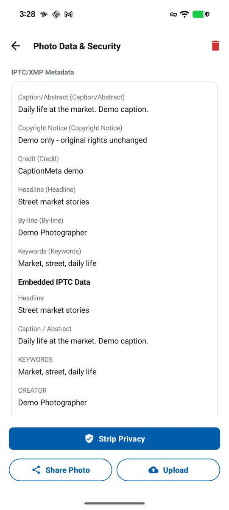

사진 전달 대기열
처리한 사진을 대기열에 넣고 설정된 서버로 전달한 뒤 결과를 확인합니다.
해결하는 문제: 파일, 서버 설정과 재시도 상태를 따로 관리하면 현장 사진 전달이 실패하기 쉽습니다.

할 수 있는 작업
- 처리된 사진 파일을 전달 대기열에 넣기
- 설정된 FTP, FTPS, SFTP, HTTP, SMB와 WebDAV 클라이언트 사용하기
- 일부 일시적 HTTP 실패를 재시도하고 업로드 결과를 확인하기
사용 가능한 옵션
- FTP, FTPS, SFTP, HTTP, SMB와 WebDAV 서버 프로필
지원 입력
- 처리된 로컬 사진과 설정된 전달 서버 프로필
출력
- 업로드 대기열 작업과 성공 또는 실패 결과
작업 흐름
- 전달 서버 프로필을 설정합니다
- 처리된 사진을 선택해 업로드 대기열에 추가합니다
- 대기열을 확인하고 재시도 가능한 실패를 다시 실행한 뒤 기록을 검토합니다
제한 사항
- 전달에는 사용자가 설정한 접근 가능한 서버와 인증 정보가 필요하며, 앱은 호스팅 사진 저장소를 제공하지 않습니다.
자주 묻는 질문
어떤 사진 전달 프로토콜을 지원하나요?
업로드 모듈에는 FTP, FTPS, SFTP, HTTP, SMB와 WebDAV 클라이언트 및 설정 모델이 있습니다.